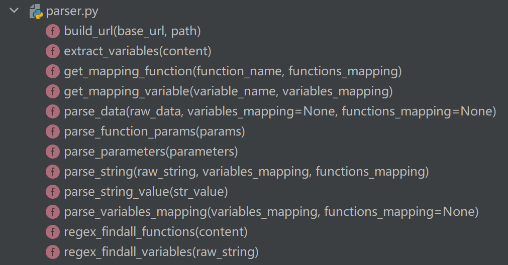
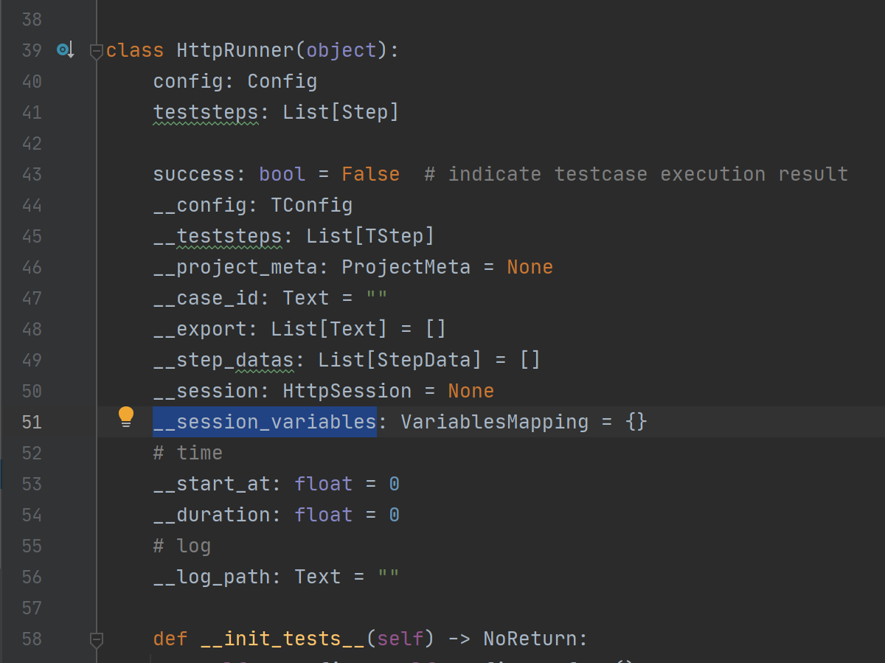
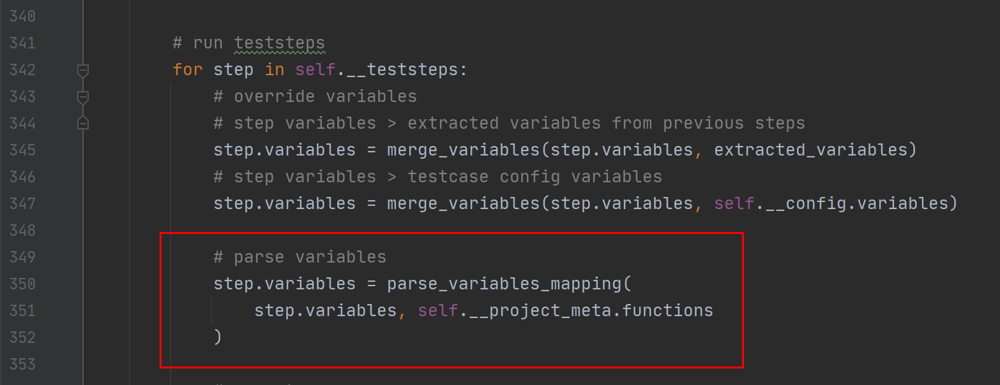
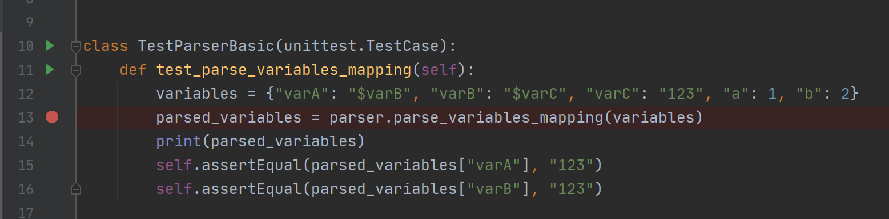
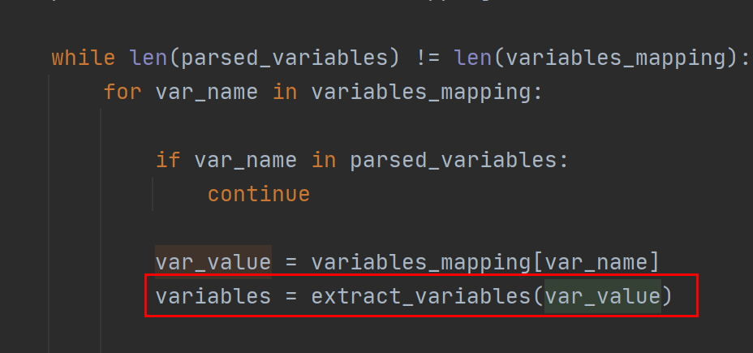
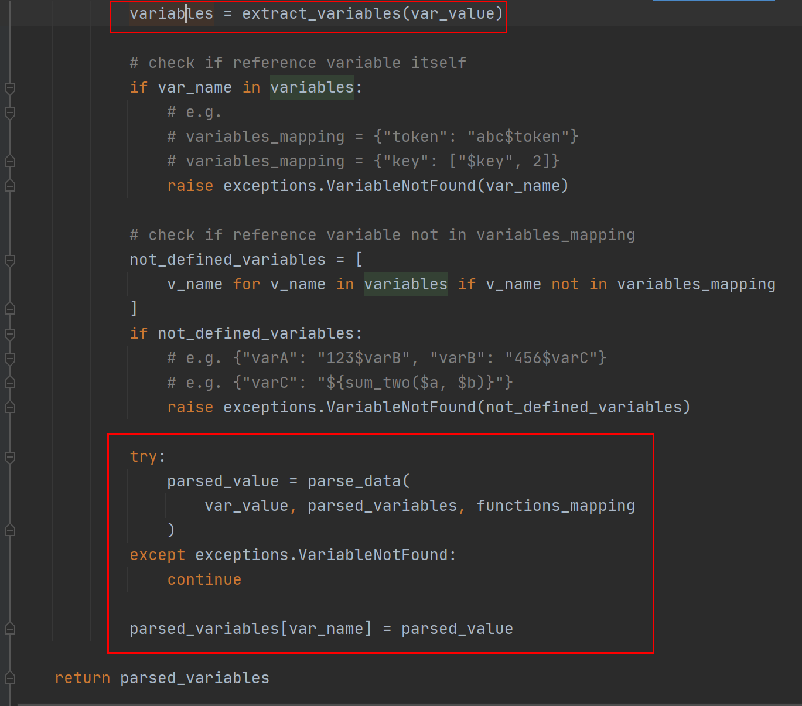

HttpRunner3的$符号是如何解析的¶

变量解析¶
$符号在很多测试框架中都会拿来用做变量解析，大名鼎鼎的JMeter就有这个用法。HttpRunner3也支持$符号，比如：
Step(
RunRequest("登录")
.post("/login")
.with_headers(**{"Content-Type": "application/json"})
.with_json({"username": "dongfanger", "password": "123456"})
.extract()
.with_jmespath("body.token", "token")
.validate()
.assert_equal("status_code", 200)
),
Step(
RunRequest("搜索商品")
.get("searchSku?skuName=电子书")
.with_headers(**{"token": "$token"})
.extract()
.with_jmespath("body.skuId", "skuId")
.with_jmespath("body.price", "skuPrice")
.validate()
.assert_equal("status_code", 200)
),
从登录提取的变量token，在搜索商品中使用$token来引用。
parser.py¶
HttpRunner对$符号的解析是在parser.py文件中实现的：

这些方法可以分为四类：
url
build_url()变量
extract_variables()get_mapping_variable()parse_variables_mapping()regex_findall_variables()parse_data()parse_string()函数
get_mapping_function()parse_function_params()regex_findall_functions()parse_string_value()parse_data()parse_string()参数化（
"${parameterize(account.csv)}"）parse_parameters()
本文专门针对变量这一块源码来进行剖析。
全局变量池¶
HttpRunner3在运行时的所有变量都是存储在__session_variables这个字典中的：

在脚本开始时会把config的预设变量加载进来，然后会在执行Step测试步骤时，把各个步骤的变量也放到全局变量池里面。
解析过程¶
在runner.py的第350行代码能看到解析变量的调用：

然后parse_variables_mapping()函数需要仔细看：
def parse_variables_mapping(
variables_mapping: VariablesMapping, functions_mapping: FunctionsMapping = None
) -> VariablesMapping:
parsed_variables: VariablesMapping = {}
while len(parsed_variables) != len(variables_mapping):
for var_name in variables_mapping:
if var_name in parsed_variables:
continue
var_value = variables_mapping[var_name]
variables = extract_variables(var_value)
# check if reference variable itself
if var_name in variables:
# e.g.
# variables_mapping = {"token": "abc$token"}
# variables_mapping = {"key": ["$key", 2]}
raise exceptions.VariableNotFound(var_name)
# check if reference variable not in variables_mapping
not_defined_variables = [
v_name for v_name in variables if v_name not in variables_mapping
]
if not_defined_variables:
# e.g. {"varA": "123$varB", "varB": "456$varC"}
# e.g. {"varC": "${sum_two($a, $b)}"}
raise exceptions.VariableNotFound(not_defined_variables)
try:
parsed_value = parse_data(
var_value, parsed_variables, functions_mapping
)
except exceptions.VariableNotFound:
continue
parsed_variables[var_name] = parsed_value
return parsed_variables
tests/parser_test.py有一段测试代码：

建议打个断点，调试一把，就知道代码是怎么个原理了。
大概思路是：最外层的while循环会比较已解析和未解析的存储字典长度，只有当所有的变量都解析到值以后，才会正常退出。拿示例代码来说，第一次循环只会解析出varC、a、b，第二次循环才会解析出varB，第三次循环解析出varA。
循环内部，先是调用extract_variables()方法解析出变量集合：

def extract_variables(content: Any) -> Set:
""" extract all variables in content recursively.
"""
if isinstance(content, (list, set, tuple)):
variables = set()
for item in content:
variables = variables | extract_variables(item)
return variables
elif isinstance(content, dict):
variables = set()
for key, value in content.items():
variables = variables | extract_variables(value)
return variables
elif isinstance(content, str):
return set(regex_findall_variables(content))
return set()
regex_findall_variables()函数就是用来解析字符串的，采用的是正则匹配：
def regex_findall_variables(raw_string: Text) -> List[Text]:
""" extract all variable names from content, which is in format $variable
Args:
raw_string (str): string content
Returns:
list: variables list extracted from string content
Examples:
>>> regex_findall_variables("$variable")
["variable"]
>>> regex_findall_variables("/blog/$postid")
["postid"]
>>> regex_findall_variables("/$var1/$var2")
["var1", "var2"]
>>> regex_findall_variables("abc")
[]
"""
try:
match_start_position = raw_string.index("$", 0)
except ValueError:
return []
vars_list = []
while match_start_position < len(raw_string):
# Notice: notation priority
# $$ > $var
# search $$
dollar_match = dolloar_regex_compile.match(raw_string, match_start_position)
if dollar_match:
match_start_position = dollar_match.end()
continue
# search variable like ${var} or $var
var_match = variable_regex_compile.match(raw_string, match_start_position)
if var_match:
var_name = var_match.group(1) or var_match.group(2)
vars_list.append(var_name)
match_start_position = var_match.end()
continue
curr_position = match_start_position
try:
# find next $ location
match_start_position = raw_string.index("$", curr_position + 1)
except ValueError:
# break while loop
break
return vars_list
调用extract_variables()方法解析出变量集合以后，就会进行异常校验：变量是否引用自己和变量未定义：

如果校验通过就会调用parse_data()解析出变量值，存入已解析的字典parsed_variables中。
parse_data()和parse_string()两个函数和主要流程无关了，它们的作用就是解析出变量值，感兴趣的读者朋友可以自行研究一下：
def parse_data(
raw_data: Any,
variables_mapping: VariablesMapping = None,
functions_mapping: FunctionsMapping = None,
) -> Any:
""" parse raw data with evaluated variables mapping.
Notice: variables_mapping should not contain any variable or function.
"""
if isinstance(raw_data, str):
# content in string format may contains variables and functions
variables_mapping = variables_mapping or {}
functions_mapping = functions_mapping or {}
# only strip whitespaces and tabs, \n\r is left because they maybe used in changeset
raw_data = raw_data.strip(" \t")
return parse_string(raw_data, variables_mapping, functions_mapping)
elif isinstance(raw_data, (list, set, tuple)):
return [
parse_data(item, variables_mapping, functions_mapping) for item in raw_data
]
elif isinstance(raw_data, dict):
parsed_data = {}
for key, value in raw_data.items():
parsed_key = parse_data(key, variables_mapping, functions_mapping)
parsed_value = parse_data(value, variables_mapping, functions_mapping)
parsed_data[parsed_key] = parsed_value
return parsed_data
else:
# other types, e.g. None, int, float, bool
return raw_data
def parse_string(
raw_string: Text,
variables_mapping: VariablesMapping,
functions_mapping: FunctionsMapping,
) -> Any:
""" parse string content with variables and functions mapping.
Args:
raw_string: raw string content to be parsed.
variables_mapping: variables mapping.
functions_mapping: functions mapping.
Returns:
str: parsed string content.
Examples:
>>> raw_string = "abc${add_one($num)}def"
>>> variables_mapping = {"num": 3}
>>> functions_mapping = {"add_one": lambda x: x + 1}
>>> parse_string(raw_string, variables_mapping, functions_mapping)
"abc4def"
"""
try:
match_start_position = raw_string.index("$", 0)
parsed_string = raw_string[0:match_start_position]
except ValueError:
parsed_string = raw_string
return parsed_string
while match_start_position < len(raw_string):
# Notice: notation priority
# $$ > ${func($a, $b)} > $var
# search $$
dollar_match = dolloar_regex_compile.match(raw_string, match_start_position)
if dollar_match:
match_start_position = dollar_match.end()
parsed_string += "$"
continue
# search function like ${func($a, $b)}
func_match = function_regex_compile.match(raw_string, match_start_position)
if func_match:
func_name = func_match.group(1)
func = get_mapping_function(func_name, functions_mapping)
func_params_str = func_match.group(2)
function_meta = parse_function_params(func_params_str)
args = function_meta["args"]
kwargs = function_meta["kwargs"]
parsed_args = parse_data(args, variables_mapping, functions_mapping)
parsed_kwargs = parse_data(kwargs, variables_mapping, functions_mapping)
try:
func_eval_value = func(*parsed_args, **parsed_kwargs)
except Exception as ex:
logger.error(
f"call function error:\n"
f"func_name: {func_name}\n"
f"args: {parsed_args}\n"
f"kwargs: {parsed_kwargs}\n"
f"{type(ex).__name__}: {ex}"
)
raise
func_raw_str = "${" + func_name + f"({func_params_str})" + "}"
if func_raw_str == raw_string:
# raw_string is a function, e.g. "${add_one(3)}", return its eval value directly
return func_eval_value
# raw_string contains one or many functions, e.g. "abc${add_one(3)}def"
parsed_string += str(func_eval_value)
match_start_position = func_match.end()
continue
# search variable like ${var} or $var
var_match = variable_regex_compile.match(raw_string, match_start_position)
if var_match:
var_name = var_match.group(1) or var_match.group(2)
var_value = get_mapping_variable(var_name, variables_mapping)
if f"${var_name}" == raw_string or "${" + var_name + "}" == raw_string:
# raw_string is a variable, $var or ${var}, return its value directly
return var_value
# raw_string contains one or many variables, e.g. "abc${var}def"
parsed_string += str(var_value)
match_start_position = var_match.end()
continue
curr_position = match_start_position
try:
# find next $ location
match_start_position = raw_string.index("$", curr_position + 1)
remain_string = raw_string[curr_position:match_start_position]
except ValueError:
remain_string = raw_string[curr_position:]
# break while loop
match_start_position = len(raw_string)
parsed_string += remain_string
return parsed_string
技术都是相通的¶
通过阅读源码可以发现，技术都是相通的。对于HttpRunner来说，它之所以要费这么大周章设计$符号，就是因为它的定位是要让不怎么会写代码的同学，也能使用yaml轻松写自动化。但是V3版本出来以后，官方强烈建议采用直接编写Python代码，但仍然遵循yaml这种约定，是不是反而成为了一种约束呢？跳出这个框架，直接编写pytest，岂不是效率会更高一些？这些问题的答案需要我们根据自身特点和业务场景去把握了。就我个人而言，仍然且始终坚持，纯Python代码写自动化的方式。